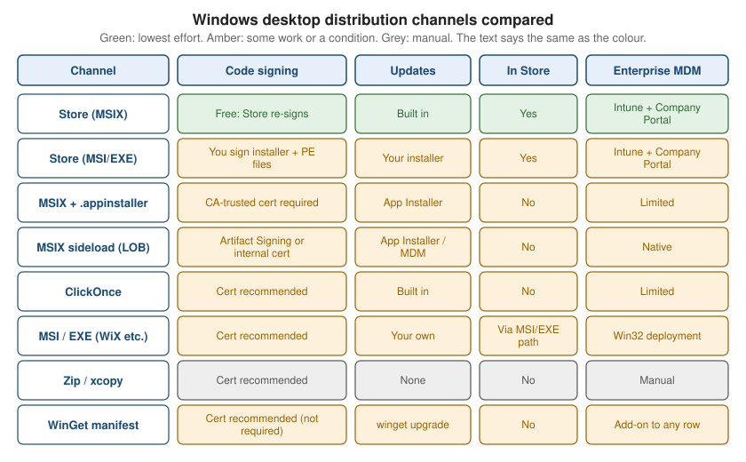

Distribution Channels
|
This content was generated with the assistance of AI and should be verified against the official documentation before being relied on in production. |
A Windows desktop app can reach its users along a dozen different roads, and each road decides four things at once: who signs the package, how updates arrive, how users find the app, and how an IT department can deploy it. Choosing a road late is expensive, because the package format (MSIX, MSI, a ClickOnce manifest, a folder of files) is baked into the build. This page lays every road side by side for Bookshelf Desktop, the running scenario of this section, gives a decision flow, and then walks each channel: the Microsoft Store, App Installer files, WinGet, ClickOnce, classic installers and plain zip files.
The page was written against these versions, current in October 2026:
-
.NET 10 LTS, latest patch 10.0.13, with C# 14. .NET 11 is at release candidate 2 (general availability is expected 10 to 13 November 2026); no channel on this page changes with it. .NET 8 and .NET 9 both end support on 10 November 2026.
-
Visual Studio 2026 18.11.1 and the Windows App SDK 2.5.1 for WinUI 3 projects.
-
Microsoft Store Policies version 7.20, winget-cli 1.29.380 and winget-create 1.12.13.0.
-
Windows 11 and Windows 10. Windows 10 reached the end of support on 14 October 2025.
How to build the artifacts themselves belongs to sibling pages of this section: the publish options of
dotnet publish are on .NET Publishing Options, MSIX construction and signing on
MSIX Packaging & Signing, update behaviour and version numbers on Updates, Versioning & Telemetry, and the automation of
everything below on CI/CD with GitHub Actions. This page decides where the artifact goes and what that choice
requires. For the same decision on other platforms, see
Distributing Mac Apps with Developer ID and Notarization
and Publishing on Google Play.
The Channels at a Glance
Microsoft’s own decision page, "Choose a distribution path for your Windows app", was last updated in October 2026. It recommends the Microsoft Store for most developers and compares the paths in a table. The table below follows the same facts, regrouped by what a Bookshelf Desktop release engineer has to decide.
| Channel | Package | Who signs | Updates | Store listing | Enterprise deployment |
|---|---|---|---|---|---|
Microsoft Store, MSIX submission |
MSIX |
Free: Microsoft re-signs the package |
Store-managed, differential, staged rollout |
Yes |
Intune with Company Portal |
Microsoft Store, MSI/EXE submission |
MSI or EXE installer |
You: the installer and all PE files need a certificate chaining to the Microsoft Trusted Root Program |
Your app or installer; no Store-managed updates |
Yes |
Intune with Company Portal |
MSIX with |
MSIX plus App Installer file |
You: a CA-trusted certificate (self-signed is not trusted by default) |
App Installer checks on launch or in the background |
No |
Limited |
MSIX sideload for a company |
MSIX |
You: Azure Artifact Signing, a CA certificate or an internal certificate pushed by Intune |
App Installer file or MDM |
No |
Native (Intune, Configuration Manager) |
WinGet |
Any supported installer type, referenced by a manifest |
Certificate recommended |
|
No |
Scriptable, not an MDM channel |
ClickOnce |
ClickOnce manifests plus files |
Manifests signed with a certificate (a certificate is recommended) |
Built in, checked at launch |
No |
Limited |
MSI or EXE installer (WiX, Inno Setup, NSIS) |
MSI or EXE |
You: certificate recommended |
Manual or your own code |
Via the MSI/EXE Store submission |
Win32 app deployment through Intune or Configuration Manager |
Zip or xcopy |
Folder of files, optionally a single-file EXE |
Certificate recommended |
None |
No |
Manual |
Two readings of this table matter most. First, signing is the main cost axis: the Store gives it away for MSIX, and everything outside the Store either requires or strongly benefits from a certificate the publisher pays for. Second, updates are the main operational axis: only the Store (MSIX), App Installer, ClickOnce and WinGet give the user an update path without extra code.

Which channels exist depends on the project type. The packaging model decides what is even possible:
| Channel | WPF on .NET 10 | WinForms on .NET 10 | WinUI 3 with Windows App SDK |
|---|---|---|---|
Store (MSIX) |
Yes, through a Windows Application Packaging Project or a single-project MSIX |
Yes, same as WPF |
Yes, packaged by default |
Store (MSI/EXE) |
Yes |
Yes |
Yes, for an unpackaged build |
App Installer |
Yes, with an MSIX |
Yes, with an MSIX |
Yes, with an MSIX |
WinGet |
Yes |
Yes |
Yes |
ClickOnce |
Yes |
Yes |
Not supported |
MSI/EXE installers |
Yes |
Yes |
Yes, for an unpackaged build |
Zip or xcopy |
Yes (framework-dependent or self-contained) |
Yes |
Unpackaged only; |
Choosing a Channel
The decision flow below encodes the questions in the order they eliminate options. It is a starting point, not a rule: nothing stops a team from combining a Store listing for consumers, a WinGet manifest for developers and an App Installer feed for beta testers, and Bookshelf Desktop does exactly that later on this page.
The flow reproduces the conclusions of that page: MSIX through the Store for most apps, MSIX with App Installer for ISVs that sell from their own site, MSIX sideloading for company-managed devices, ClickOnce for WPF and WinForms only, and classic installers when the installation itself is complicated (drivers, services, registry work). WinGet is drawn as an add-on, because the Learn page describes it as adding discoverability to any of the other paths rather than replacing them.
The Microsoft Store
Publishing in the Microsoft Store is, in Microsoft’s words, the most complete distribution solution for Windows apps. There are two submission types, and they behave very differently.
| MSIX submission | MSI/EXE submission | |
|---|---|---|
What you upload |
A signed or unsigned MSIX package, bundle or upload file |
A versioned HTTPS URL to an installer on your own server or CDN |
Who hosts the files |
Microsoft |
You |
Signing |
Microsoft re-signs the package; no certificate purchase |
You sign the installer and all PE files with a certificate chaining to a CA in the Microsoft Trusted Root Program |
Updates |
Store-managed, with differential downloads and staged rollouts |
Your app or installer; Store-managed updates are not available |
Installer requirement |
A package that passes the MSIX requirements |
A silent-install capable installer that passes the MSI/EXE requirements |
Typical choice |
New apps and every WinUI 3 app |
An existing Win32 app that already has WiX, Inno Setup or NSIS |
Both paths give the app discovery through Store search, a trusted install experience, revenue processing, refunds and analytics, and enterprise deployment through Intune with Company Portal.
The Developer Account
A Store submission requires a developer account in Partner Center. Two account types exist: Individual for
publishing under your own name, and Company for a registered legal entity. With the onboarding flow that starts at
storedeveloper.microsoft.com, Learn states that there are no registration fees for either type. Other entry
points (Partner Center directly, Xbox or Visual Studio) show the legacy flow, which the Learn page says is not the
free one.
| Individual | Company | |
|---|---|---|
Who |
Developers whose Store distribution is unrelated to a business, trade or profession; hobby and school projects |
Businesses, organizations, freelancers selling professionally, and teams within a company |
Sign-in |
A personal Microsoft account |
A personal Microsoft account or a Microsoft Entra ID work account |
Verification |
Government-issued ID and a selfie |
Business verification with a D-U-N-S number (recommended) or official business documents, plus a work email on the company domain |
Waiting time |
Identity check, typically completed in the same session |
Automatic in seconds to a minute, or manual review of about 2 to 5 business days |
Switching later |
Not possible: an Individual account cannot be changed to Company |
Not applicable |
For Bookshelf Desktop, a hobby project, an Individual account is enough; a team shipping it commercially chooses Company from the start, because the switch is not supported.
Submission Steps for an MSIX App
The submission flow in Partner Center is the same for every MSIX app. The checklist below follows the current Learn page and marks where Bookshelf Desktop needs a decision.
-
Reserve the app name. Reserving the name in Partner Center creates the app and its Store identity. The package manifest must carry that identity (package name and publisher) for the upload to be accepted; in Visual Studio the "Associate App with the Store" command writes the values into the manifest.
-
Build and test the package. Produce an MSIX (or a bundle, or an upload file). Run the Windows App Certification Kit locally first; it catches most certification failures before Microsoft does.
-
Start a submission. In the Product release section of the app overview, choose "Start submission". A draft appears with every step to complete, in any order.
-
Pricing and availability. Markets (default: all), audience (default: public), discoverability, schedule (default: release as soon as possible) and the base price are required. Free trial, sale pricing and organizational licensing are optional.
-
Properties. A category is required. A privacy policy URL is required if the app collects or transmits personal information; contact details are required for business accounts.
-
Age ratings. Answer the questionnaire; all questions are required.
-
Packages. Upload at least one package. The section shows "Incomplete" until all required package settings are done, even if the upload itself reads "Validated".
-
Store listings. A description and at least one screenshot are required for at least one language; Microsoft recommends four or more screenshots and a listing in every language the app supports. Bookshelf Desktop ships English and Spanish, so it provides both listings.
-
Submission options. Notes for certification are optional but useful (for example, a test account); restricted capabilities such as
runFullTrustmust be justified here when declared. -
Submit for certification. The status changes to "in Certification". When certification passes, the app is published according to the schedule chosen earlier.
The same flow can be automated. The Learn page points to the Microsoft Store submission API for that, and the CI/CD page of this section covers the Microsoft Store Developer CLI as a pipeline step.
Submission Steps for an MSI or EXE App
An MSI/EXE submission skips the package upload. In its place, the Packages page takes the installer URL, and the rest of the flow (name reservation, pricing, properties, age ratings, listings, certification) is the same. The requirements that differ:
-
The URL must be HTTPS and versioned: each submitted version points to a file that does not change. Overwriting the file behind a published URL makes the hash recorded at submission fail to match.
-
The installer must support silent installation, because the Store runs it as part of its install flow.
-
The installer and all portable executables inside the app must be signed with a certificate that chains to a CA in the Microsoft Trusted Root Program. Self-signed is not accepted.
-
All users added to the Partner Center account can submit and modify EXE or MSI apps; the per-user roles and permissions do not apply to this app type.
Certification and Store Policies
Every submission passes certification against the Microsoft Store Policies, currently version 7.20. The policies cover product quality, security, privacy, content, financial transactions, and the behaviour of packages. The practical consequences for a desktop developer are:
| Area | What to prepare for Bookshelf Desktop |
|---|---|
Accurate metadata |
Title, description and screenshots must match what the app does; screenshots come from the real app. |
Privacy |
A privacy policy URL if the app sends the sync token or any personal data off the device. Bookshelf Desktop with cloud sync enabled needs one. |
Capabilities |
Declare only capabilities the app needs. |
Install and uninstall |
The app must install, run and uninstall cleanly; MSIX gives this by design, installers must prove it. |
Security |
No malware, no downloading and running code that changes the described function. |
Ratings |
The age-rating questionnaire must be answered truthfully; content outside the app’s rating is a failure. |
The policy document is long and is revised several times a year, so the release checklist of a Store app should link to the current version instead of copying it.
The Windows App Certification Kit
The Windows App Certification Kit (WACK) runs a subset of the certification tests on the developer’s machine, so failures show up before a submission is made. It ships with the Windows SDK, can be started from the Start menu or the command line, and writes an HTML or XML report. Running it on the final, signed package is the cheapest way to avoid a failed certification, which otherwise costs a round trip of a day or more.
# Run the kit against the built MSIX and write an XML report (path of appcert.exe depends on the Windows SDK install).
& "${env:ProgramFiles(x86)}\Windows Kits\10\App Certification Kit\appcert.exe" reset
& "${env:ProgramFiles(x86)}\Windows Kits\10\App Certification Kit\appcert.exe" test `
-appxpackagepath ".\artifacts\Bookshelf.Desktop_1.4.0.0_x64.msix" `
-reportoutputpath ".\artifacts\wack-report.xml"Source: Windows App Certification Kit
Flighting and Staged Rollouts
Partner Center supports package flights: a flight is a version of the app delivered only to a chosen group of Microsoft accounts or Entra ID groups, so a beta can ship through the real Store pipeline without a second listing. A submission can also roll out gradually to a percentage of users and be halted if crash rates climb. Both features are part of the MSIX submission path and are not available to MSI/EXE submissions, which have no Store-managed updates. Bookshelf Desktop uses a flight for its beta ring and a staged rollout for each public release.
App Installer: MSIX Outside the Store
An App Installer file (.appinstaller) is a small XML file that tells Windows where an MSIX package lives and
how to keep it updated. The user installs by opening the .appinstaller instead of the package, and the app stays
associated with the file: when you change the file to point to a new version, installed copies update. The file
format has existed since Windows 10 version 1709. Downloads and updates work over HTTPS, HTTP and SMB, so the same
mechanism serves a public website and a company file share.
The Disabled ms-appinstaller Protocol
Older tutorials link users to an install page with the ms-appinstaller:?source= URI scheme, which opened the
installer directly from the browser. That protocol handler was disabled by default in App Installer version
1.21.3421.0, released on 12 December 2023, after the Emotet malware campaign abused it. On consumer devices it is
off; enterprise administrators can re-enable it through the EnableMSAppInstallerProtocol Group Policy of the
DesktopAppInstaller CSP (the policy value named "Disabled" means "not configured", so it is set to "Enabled" to
turn the protocol back on). The supported pattern today is a plain download link to the .appinstaller file; the
user downloads it and opens it.
| Approach | Status |
|---|---|
|
Disabled by default for consumers; do not rely on it. |
Plain link to |
Works; the user downloads and double-clicks. |
Store listing |
One-click install without any protocol dependency. |
Enterprise Group Policy |
Re-enables the protocol for managed devices. |
Schema Versions: Use 2021
Visual Studio still generates .appinstaller files with the 2017/2 schema by default. That schema does not
support ShowPrompt, UpdateBlocksActivation or HoursBetweenUpdateChecks, and settings that use them are
silently ignored at run time. The fix is to change the namespace to the 2021 schema by hand, as in the example
below.
| Attribute | 2017/2 schema | 2021 schema |
|---|---|---|
|
Not supported |
Supported |
|
Not supported |
Supported |
|
Not supported |
Supported |
Basic update on launch |
Supported |
Supported |
A 2021-Schema Example for Bookshelf Desktop
<?xml version="1.0" encoding="utf-8"?>
<AppInstaller
xmlns="http://schemas.microsoft.com/appx/appinstaller/2021"
Version="1.4.0.0"
Uri="https://downloads.example.com/bookshelf/Bookshelf.Desktop.appinstaller">
<MainPackage
Name="Example.BookshelfDesktop"
Publisher="CN=Example Publisher"
Version="1.4.0.0"
ProcessorArchitecture="x64"
Uri="https://downloads.example.com/bookshelf/1.4.0.0/Bookshelf.Desktop_1.4.0.0_x64.msix" />
<UpdateSettings>
<OnLaunch
HoursBetweenUpdateChecks="12"
ShowPrompt="true"
UpdateBlocksActivation="false" />
<ForceUpdateFromAnyVersion>false</ForceUpdateFromAnyVersion>
</UpdateSettings>
</AppInstaller>The elements work as follows:
| Element or attribute | Meaning |
|---|---|
|
The version of the |
|
The address the file was published at; Windows uses it to find the file again when checking for updates. |
|
The package this file installs; |
|
Checks for updates when the user starts the app; can show UI. Needs Windows 10 version 1709. |
|
How often the launch check runs, 0 to 255 hours, default 24. Windows 10 version 1803 and later. |
|
Show update UI to the user. Windows 10 version 1903 and later. |
|
When true, the prompt lets the user update or close the app, not start the old version. Can be true only if |
|
Checks every 8 hours independently of launching the app and cannot show UI. Windows 10 version 1803 and later. |
|
Allows moving to any version, including a downgrade; without it the app only moves to a higher version. Windows 10 version 1903 and later. |
The MainPackage Version must be higher than the installed version for an update to apply, which is why the
four-part MSIX version number matters; Updates, Versioning & Telemetry explains how to derive it. The signing
certificate must stay trusted by the user’s device between versions, and the publisher string must not change.
Hosting the Feed
The feed is static files. Any web server, object-storage bucket or SMB share works as long as it serves the files with the right content types:
| File | Content type | Notes |
|---|---|---|
|
|
Served over HTTPS; HTTP and SMB also work but are weaker. |
|
|
The signed package the |
|
|
For multi-architecture bundles referenced by |
The content types in the table above are the registered names used by the MSIX tooling; a server that returns
application/octet-stream for these files usually still works, but some browsers then treat the download
differently. Treat the table as a configuration hint to check against your host rather than a hard requirement.
WinGet
WinGet (the Windows Package Manager) installs software from the command line: winget install Example.BookshelfDesktop.
It is not a package format. A WinGet manifest is a YAML file that describes an existing installer (an MSIX, MSI,
EXE, Inno Setup, Nullsoft, portable or zip package) and where to download it, and WinGet downloads and runs that
installer. The public catalog lives in the open-source repository microsoft/winget-pkgs, and the Learn
documentation describes WinGet as an ISV distribution channel that works in addition to any other path.
Preparing the Build
The chapter on distribution in Tidjani Belmansour’s Building CLI Applications with C# and .NET (chapter 11,
pages 231 to 234) walks through exactly this flow for a command-line tool: publish a self-contained build for
win-x64, host the installer on a stable HTTPS URL, generate a manifest with wingetcreate, and test it locally
with winget install --manifest. The same steps apply to a desktop app. The book covers neither signing nor MSIX
for this channel, so the signing guidance below comes from the official documentation instead.
# A self-contained, single-file win-x64 build of a WPF or WinForms app (WinUI 3 uses MSIX or an unpackaged folder).
dotnet publish .\src\Bookshelf.Desktop\Bookshelf.Desktop.csproj `
--configuration Release `
--runtime win-x64 `
--self-contained true `
-p:PublishSingleFile=true `
--output .\artifacts\publish
# The manifest below points to the signed MSIX built from this output (see MSIX Packaging & Signing).
# winget hash prints its InstallerSha256 and, with --msix, its SignatureSha256.
winget hash --msix .\artifacts\Bookshelf.Desktop_1.4.0.0_x64.msixThe WinGet installer types are the ones WinGet knows how to run, so the build output is normally wrapped before it
is referenced: an installer (MSI, an Inno Setup or Nullsoft EXE), an MSIX, or a zip that contains a portable or
nested installer. The winget-pkgs README lists the accepted types as MSIX, MSI, APPX, MSIXBundle, APPXBundle or
.exe application installers.
Is Signing Required?
The question deserves care, because advice circulating on the web differs. What the official documentation says today:
-
The Learn page "Choose a distribution path" (updated October 2026) lists code signing for a WinGet manifest as "Cert recommended", not required, and notes that WinGet adds discoverability to any distribution path.
-
The Windows Package Manager repository policies on Learn (document version 1.0, effective 22 May 2021, page updated 30 August 2026) contain no code-signing rule. They require that the
InstallerUrlis the publisher’s own release location, that tags do not exceed 16 and that products do not compromise device security. -
The validation pipeline does run each installer through several antivirus programs, checks that it installs and uninstalls for administrators and non-administrators, that it installs non-interactively, that URLs are HTTPS and direct (no redirectors), and that the downloaded file matches
InstallerSha256.
So an unsigned installer is not rejected by policy, but it is the most likely to trigger SmartScreen prompts for
users and antivirus false positives in validation (labels such as Binary-Validation-Error and
Validation-Defender-Error exist for this). The practical rule for Bookshelf Desktop is to sign what WinGet
installs: an MSIX signed with a CA-trusted certificate, or a signed EXE or MSI. If you read elsewhere that WinGet
now requires signing, check the Learn policy page before relying on it; the official pages state a recommendation,
not a requirement.
A Manifest for Bookshelf Desktop
The multi-file manifest format splits a package version into a version file, an installer file and one locale file
per language. The manifest version in the current Learn examples is 1.12.0. The three files below describe
Bookshelf Desktop 1.4.0 distributed as a signed MSIX. The path inside winget-pkgs is
manifests/e/Example/BookshelfDesktop/1.4.0/: the folder names follow the pattern letter, publisher, application,
version, and PackageIdentifier plus PackageVersion must match that path.
# Example.BookshelfDesktop.yaml (version file)
PackageIdentifier: Example.BookshelfDesktop
PackageVersion: 1.4.0
DefaultLocale: en-US
ManifestType: version
ManifestVersion: 1.12.0# Example.BookshelfDesktop.installer.yaml
PackageIdentifier: Example.BookshelfDesktop
PackageVersion: 1.4.0
Platform:
- Windows.Desktop
MinimumOSVersion: 10.0.19041.0
InstallerType: msix
InstallModes:
- silent
PackageFamilyName: <package-family-name-of-the-signed-msix>
Installers:
- Architecture: x64
InstallerUrl: https://downloads.example.com/bookshelf/1.4.0.0/Bookshelf.Desktop_1.4.0.0_x64.msix
InstallerSha256: <sha256-of-the-msix-file>
SignatureSha256: <sha256-of-the-msix-signature-file>
ManifestType: installer
ManifestVersion: 1.12.0# Example.BookshelfDesktop.locale.en-US.yaml (default locale)
PackageIdentifier: Example.BookshelfDesktop
PackageVersion: 1.4.0
PackageLocale: en-US
Publisher: Example Publisher
PublisherUrl: https://www.example.com/
PrivacyUrl: https://www.example.com/privacy
PackageName: Bookshelf Desktop
PackageUrl: https://www.example.com/bookshelf
License: MIT
LicenseUrl: https://www.example.com/bookshelf/license
ShortDescription: A Windows client for the Bookshelf library catalog.
Tags:
- books
- library
- catalog
ManifestType: defaultLocale
ManifestVersion: 1.12.0Source: Create your package manifest
The fields to understand:
| Field | Meaning |
|---|---|
|
Unique |
|
The version of this release; one pull request per version. |
|
A BCP 47 tag such as |
|
|
|
A direct HTTPS URL on the publisher’s own release location; redirectors and download portals are rejected. |
|
SHA256 of the file at that URL; a mismatch gives |
|
For MSIX installers, the hash of the package signature stream. |
|
For MSIX installers, the package family name, which lets WinGet correlate installs and upgrades. |
|
Relevant search tags; at most 16 unique tags. |
|
Required by policy when the product handles personal information. |
A manifest for a classic installer swaps the Installers entry: InstallerType: inno (or msi, nullsoft,
exe), an InstallerSwitches block when the installer needs custom silent switches, and a ProductCode for MSI
packages so that WinGet can detect the installed version and upgrade correctly. The Learn page lists common silent
switches: /q for MSI, /SILENT or /VERYSILENT for Inno Setup, /S for Nullsoft, and /s for InstallShield.
Generating and Updating Manifests with wingetcreate
Writing three YAML files by hand is rarely necessary. wingetcreate (winget-create 1.12.13.0) is a command-line
tool that downloads the installer, computes the hash, reads installer metadata and prompts for the rest:
# Install the tool (also available through Scoop and Chocolatey).
winget install wingetcreate
# First submission: create the manifest interactively from the installer URL.
wingetcreate new https://downloads.example.com/bookshelf/1.4.0.0/Bookshelf.Desktop_1.4.0.0_x64.msix
# Every later release: update the existing manifest and open the pull request.
wingetcreate update Example.BookshelfDesktop `
--urls https://downloads.example.com/bookshelf/1.5.0.0/Bookshelf.Desktop_1.5.0.0_x64.msix `
--version 1.5.0 `
--submitSource: winget-create
wingetcreate new ends with an offer to submit the manifest as a pull request; answering yes opens the pull
request against microsoft/winget-pkgs automatically. The commands the README documents are:
| Command | Purpose |
|---|---|
|
Creates a new manifest from scratch from one or more installer URLs. |
|
Updates an existing manifest for a new version. Common options are |
|
Submits a manifest that already exists as a pull request. |
|
Manages the cached GitHub personal access token; the README recommends |
For CI the README advises keeping the personal access token in a secret and passing it through the environment
variable WINGET_CREATE_GITHUB_TOKEN or the -t option. A classic token needs the repo permission. In a
GitHub Actions step the token is ${{ secrets.WINGET_PAT }}, never a literal; the CI/CD page of this section builds
the whole release workflow around it.
Validating Locally Before the Pull Request
The Learn repository page describes a four-step local check that a submission should pass before it is pushed:
# 1. Check the manifest syntax and schema.
winget validate --manifest .\manifests\e\Example\BookshelfDesktop\1.4.0
# 2. Allow installing from a local manifest (needs an administrator shell, one time).
winget settings --enable LocalManifestFiles
# 3. Install from the local manifest, as a user would.
winget install --manifest .\manifests\e\Example\BookshelfDesktop\1.4.0
# 4. Run the repository's Windows Sandbox script from a clone of winget-pkgs.
.\Tools\SandboxTest.ps1 .\manifests\e\Example\BookshelfDesktop\1.4.0Belmansour’s chapter 11 uses the same winget settings --enable LocalManifestFiles and winget install --manifest
pair to test a manifest before submission, because WinGet refuses local manifests until that setting is enabled.
The Sandbox script installs WinGet in a throwaway Windows Sandbox, installs the package there and validates the
manifest again, so it shows what the validation service will see.
The winget-pkgs Pull Request Process
Submitting means a pull request to microsoft/winget-pkgs. An automated pipeline then validates the manifest and
installs the package; a human moderator reviews the result before the package is published to the catalog. The
labels on the pull request report progress:
| Label | Meaning |
|---|---|
|
The test pass completed and the pull request waits for approval. |
|
Tests passed; the pull request will be merged. |
|
A failure or a question for you; the bot closes the pull request if nothing happens within 10 days. |
|
The WinGet team has to look, for a test failure or a community comment. |
|
A syntax error in the manifest. |
|
|
|
The URL goes through a redirector; use the publisher’s direct URL. |
|
The installer did not finish without user input. |
|
An antivirus program in the scan flagged the installer. |
Other rules from the same page: the repository accepts one manifest per submission, PackageIdentifier and
PackageVersion must match the folder path, and Microsoft reserves the right to refuse a submission for any reason.
For a false antivirus positive, the page links to the Microsoft Defender file submission portal.
WinGet Compared with the Other Channels
| Strength | Limit |
|---|---|
|
It is not an installer: the underlying package still needs signing, hosting and its own installation logic. |
One manifest works for MSIX, MSI and EXE installers |
Users must already have WinGet; it is bundled with current Windows 11 and installable on Windows 10. |
The publisher keeps the files on its own server |
The installer URL must stay stable and direct forever; moving files breaks every older manifest version. |
Public, free and reviewed |
Review adds delay; each release is a new pull request. |
ClickOnce for .NET
ClickOnce is a deployment technology built into Visual Studio: it publishes a set of manifests and files to a web
server, file share or folder, and users install from the .application manifest. The app is checked for updates at
launch and installs per user without administrator rights. The Learn comparison page recommends it for WPF and WinForms
apps distributed to a known user base, and is explicit that it is not supported for WinUI 3 apps: use MSIX with an
.appinstaller for WinUI 3 direct distribution.
Publishing
In Visual Studio, Publish on the project creates a Folder profile, and the specific target is ClickOnce. The wizard then asks for:
-
Install location: where users install from (web site, UNC path, CD or DVD or USB drive).
-
Offline availability: whether the app is listed on the Start menu and updates automatically; by default updates come from the install location, and an update location can be set separately.
-
Application files and prerequisites: the files to include and the packages to install first (the .NET Desktop Runtime for a framework-dependent app).
-
Publish version: unique per publish profile, with an option to increment it on every publish.
-
Sign the manifests: whether and with which certificate to sign.
-
Configuration: Debug or Release, target runtime identifier, framework-dependent or self-contained.
The result is a folder with a .application file, an application manifest and versioned subfolders of application
files. Publishing .NET Core 3.1, .NET 5 and later with ClickOnce requires Visual Studio 2019 16.8 or later;
.NET Framework projects use a different, older wizard.
The same profile can be published from the command line, which is what a CI job runs. The exact properties come
from the profile Visual Studio generates under Properties\PublishProfiles, so create the profile once in the IDE
and commit it:
# Publish with the ClickOnce profile that Visual Studio generated (profile name is an example).
dotnet publish .\src\Bookshelf.Desktop\Bookshelf.Desktop.csproj `
--configuration Release `
-p:PublishProfile=ClickOnceProfileReading Deployment Properties: The ClickOnce Environment Variables
The .NET Framework ApplicationDeployment class does not exist in modern .NET. Starting with .NET 7 and
Visual Studio 2022 version 17.4, the ClickOnce launcher passes the deployment properties to the app as environment
variables that carry a ClickOnce_ prefix:
| Environment variable | Equivalent property |
|---|---|
|
|
|
|
|
|
|
|
|
|
|
|
|
|
|
|
|
|
|
New: the application launcher version |
Only the properties are available; .NET 7 and later do not support the equivalent of the ApplicationDeployment
methods such as CheckForUpdate. A small service keeps the rest of Bookshelf Desktop independent of the variables:
namespace Bookshelf.Desktop.Deployment;
/// <summary>Reads the ClickOnce deployment properties from the environment.</summary>
public sealed class ClickOnceInfo
{
public bool IsNetworkDeployed =>
string.Equals(Environment.GetEnvironmentVariable("ClickOnce_IsNetworkDeployed"), "true",
StringComparison.OrdinalIgnoreCase);
public string? CurrentVersion =>
IsNetworkDeployed ? Environment.GetEnvironmentVariable("ClickOnce_CurrentVersion") : null;
public Uri? ActivationUri
{
get
{
var value = Environment.GetEnvironmentVariable("ClickOnce_ActivationUri");
return string.IsNullOrEmpty(value) ? null : new Uri(value);
}
}
}To read URL parameters from ActivationUri, the deployment manifest must set trustURLParameters. The
dotnet-mage tool (the .NET replacement for the older Mage tool) sets it with the -TrustURLParameters switch
(short form -tu), added in .NET 7, instead of editing the manifest by hand.
ClickOnce Limits to Remember
-
No WinUI 3. Use MSIX and an
.appinstallerinstead. -
Per user installs only. There is no machine-wide install and no Store listing.
-
Certificate trust. The manifests are signed; an unsigned or self-signed publisher shows a security prompt. The Learn comparison marks a certificate as recommended.
-
No package identity. Notifications that need identity, share targets and the other MSIX features on the package-identity page do not apply.
-
Updates are checked at launch. The update settings live in the publish profile, not in a separate feed file as with App Installer.
MSI and EXE Installers
Traditional installers remain the right answer when installation is more than copying files: kernel drivers, Windows services, file associations in the registry, shared prerequisites, per-machine installs. Three community tools dominate, and this page covers them in prose only, because none of them is a Microsoft product:
| Tool | What it builds | Notes |
|---|---|---|
WiX Toolset |
MSI packages and bundles (EXE bootstrappers) from XML sources |
Declarative and CI-friendly; Belmansour (chapter 11) lists WiX among the distribution options for .NET tools. |
Inno Setup |
A single setup EXE from a script |
Easy to start; WinGet understands it natively and sets the silent switches. |
NSIS |
A setup EXE from a scripting language |
Compact output; WinGet also understands Nullsoft installers natively. |
All three give the publisher full control and demand full responsibility: update logic is yours to write, the installer should be signed to avoid SmartScreen warnings, and the uninstall must really remove everything or the Store and WinGet validation will report it. Such an installer can still be listed in the Store through the MSI/EXE submission described above, and it can be combined with packaging with external location when the app needs a package identity for specific Windows features without moving to MSIX.
Belmansour’s chapter 11 gives the minimum checklist for any installer path, and it applies unchanged to a desktop app: build in Release, publish for a specific runtime identifier, decide framework-dependent or self-contained, version the artifact with semantic versioning, and keep older versions downloadable so users can roll back.
Zip and xcopy Deployment
The simplest distribution is a zip file. dotnet publish --self-contained produces a folder (or a single-file EXE
for WPF and WinForms) that runs without installing .NET, and users unzip it anywhere. The Learn comparison page puts
it in the simple utilities and power-user bucket, with no updates and a recommended certificate.
dotnet publish .\src\Bookshelf.Desktop\Bookshelf.Desktop.csproj `
--configuration Release `
--runtime win-x64 `
--self-contained true `
--output .\artifacts\bookshelf-win-x64
Compress-Archive -Path .\artifacts\bookshelf-win-x64\* -DestinationPath .\artifacts\Bookshelf.Desktop-1.4.0-win-x64.zipFor a WinUI 3 app, PublishSingleFile is supported only for unpackaged, self-contained apps on Windows App SDK 1.5
and later, produces one EXE that extracts its dependencies at first launch, and is not available to packaged or
framework-dependent apps. The unpackaged WinUI 3 route also has no package identity, so no background tasks, no
manifest-based file associations, and SmartScreen warnings unless the files are signed.
A Release Plan for Bookshelf Desktop
Pulling the decisions together, the plan below uses three channels for three audiences, all built from one
Release pipeline:
| Audience | Channel | Reason |
|---|---|---|
Consumers |
Microsoft Store, MSIX submission |
Free signing, Store-managed updates, staged rollouts and a flight for the beta ring. |
Developers and power users |
WinGet manifest pointing at the signed MSIX |
|
Beta testers and a company pilot |
MSIX plus a 2021-schema |
Update on launch with a prompt, independent of the Store review time. |
What Bookshelf Desktop does not use: ClickOnce (it would add a second package format for the same audiences, and the WinUI 3 version could not use it), and a WiX installer (nothing in the app needs more than MSIX offers). A team that has a Windows service in its product would revisit that second decision.
The shared steps in front of every channel are the same, in order: bump the version, run the tests, publish with the right runtime identifier, package, sign, run the Windows App Certification Kit, then upload or push. The sibling page CI/CD with GitHub Actions shows the workflow.
Distribution Across the Three UI Stacks
| Concern | WPF | WinUI 3 | WinForms |
|---|---|---|---|
Preferred channel |
Store MSIX, or ClickOnce for an internal tool |
Store MSIX or MSIX plus |
Store MSIX, or ClickOnce for an internal tool |
ClickOnce |
Supported |
Not supported |
Supported |
Package identity without MSIX |
Packaging with external location |
Packaging with external location |
Packaging with external location |
WinGet |
Any supported installer type |
Any supported installer type |
Any supported installer type |
Self-contained single file |
|
Unpackaged and self-contained only |
|
Trimming and Native AOT |
Not supported for WPF |
|
Not supported for WinForms |
The last row is a reminder from the publishing options page of this section: size-reduction features such as trimming and Native AOT do not apply to WPF and WinForms on .NET 10, so their self-contained builds produce large folders; a WinUI 3 app can use Native AOT, but some libraries are not AOT-compatible.
Comparison with Mac and Android
The same four decisions exist on the other platforms, with different names:
| Decision | Windows | macOS | Android |
|---|---|---|---|
Store |
Microsoft Store through Partner Center |
Mac App Store through App Store Connect |
Google Play through Play Console |
Direct download |
MSIX with App Installer, MSI/EXE, ClickOnce, zip |
Developer ID signing plus notarization |
Sideloaded APK |
Signing |
Store re-signs MSIX; otherwise a CA-trusted certificate |
Developer ID certificate, then Apple notarization |
Play App Signing plus an upload key |
Command-line install |
WinGet |
Homebrew or an installer package |
|
The macOS direct-download flow is the closest parallel to MSIX with .appinstaller or a signed WinGet installer:
see Distributing Mac Apps with Developer ID and Notarization.
The store flow with a developer account, a reserved identity, a questionnaire and a review is the parallel to
Publishing on Google Play.
Pitfalls
| Pitfall | What to do |
|---|---|
Linking users to |
The protocol is disabled by default since December 2023. Link to the |
|
Change the namespace to the 2021 schema; the 2017/2 schema silently ignores |
Package |
Associate the app with the Store in Visual Studio, or copy the identity from Partner Center; the upload is rejected otherwise. |
Choosing an Individual Store account for a company |
The account type cannot be changed later. Create a Company account. |
Registering from the wrong page |
Only |
Overwriting the file behind a Store MSI/EXE or WinGet URL |
Use a new versioned URL for every release; the recorded hash must match. |
Redirected or portal download URLs in a WinGet manifest |
The |
Expecting WinGet to sign or host |
It only points to an installer; sign and host the installer yourself. |
ClickOnce for a WinUI 3 app |
Not supported; use MSIX with App Installer. |
Expecting an EV certificate to skip SmartScreen |
Since 2024 no certificate type gives an immediate bypass; reputation builds from file hashes and publisher history. |
|
No update applies; raise the four-part MSIX version for every feed change. |
Skipping the Windows App Certification Kit |
A failed certification costs a day; run it on the final package first. |
Summary
-
Start from the Store. An MSIX Store submission is free to sign, updates itself and reaches the broadest audience; an MSI/EXE submission keeps your installer but moves signing and updates onto you.
-
Use App Installer for direct MSIX distribution and write the file with the 2021 schema, linking to the
.appinstallerfile because thems-appinstaller:protocol is disabled for consumers. -
Add a WinGet manifest to any channel for command-line users: generate it with
wingetcreate, validate it withwinget validate, test it withLocalManifestFilesandwinget install --manifest, then submit the pull request. Current Learn pages recommend signing but do not make it a requirement. -
Use ClickOnce only for WPF and WinForms, never for WinUI 3, and read its deployment properties from the
ClickOnce_*environment variables. -
Classic installers and zip files stay valid for complicated installs and simple tools; both need signing and your own update story.
-
Combine channels by audience, and automate the shared steps in CI.
References
-
Steps to open a Microsoft Store developer account in Partner Center
-
Tidjani Belmansour, Building CLI Applications with C# and .NET, Packt, 2025, chapter 11, pages 231 to 234 (
wingetcreate,LocalManifestFilesand local manifest testing) and the surrounding distribution options: https://www.packtpub.com/en-us/product/building-cli-applications-with-c-and-net-9781835882740